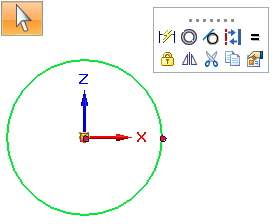
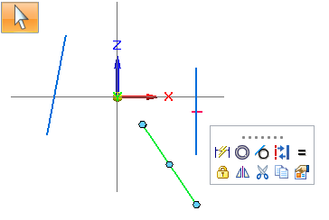

Using the 2D sketching context toolbar
Displaying the 2D sketching context toolbar
When the Select command is active, selecting a 2D sketch element—a line, arc, circle, curve, ellipse, conic, or keypoint—displays a context toolbar at the cursor that contains commands often used in sketch mode with the selected element type. Having access to the commands on the context toolbar is more convenient than locating them on the ribbon.
The commands on the context toolbar vary with the element you select.

The context toolbar is displayed in any environment where 2D sketching commands are available (synchronous, ordered, assembly sketches, and draft draw-in-view).
Controlling context toolbar display
If you do not want to use the context toolbar in 2D sketching, deselect the following option on the Helpers tab (Solid Edge Options dialog box): Show context toolbar.
Selecting 2D elements as input to other commands
You can use one or more selected 2D sketch elements (line, circle, arc, curve, ellipse, conic) as input to the commands on the context toolbar, instead of first selecting the command, followed by the inputs to the command.
Ineligible elements are removed from a selection set containing multiple elements.
To make 2D sketch lines horizontal or vertical:
-
With the Select command active, click a line.

-
On the context toolbar, click Horizontal/Vertical.
You can use this capability with the relationship commands in the Relate group. It also applies to sketch modification commands, such as Construction, Trim Corner, and Extend to Next, as well as some commands in the Dimension group and the Distance command on the Measure group.
Selecting keypoints as input to other commands
You can preselect a keypoint in an ordered sketch profile as input to the Horizontal/Vertical and Connect relationship commands, and as input to measurements (Distance Between, Coordinate Dimension, and Distance).
To select a keypoint on a curve as input to a dimension or measurement command:
-
With the Select command active, hover over the curve to display its keypoints, and then click a keypoint as the dimension origin element.

-
On the context toolbar, click Distance Between.
-
Click a second keypoint on the curve as the dimension measurement element.
Press F5 or Esc to clear the display of keypoints.
Controlling keypoint selection input
To turn off the workflow capability for keypoint selection, clear this option on the Relationship page in the IntelliSketch dialog box: Do not show key points in Select command.